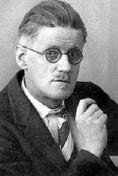

(1882 – 1941)

Herhalde tüm edebiyat tarihinde "Ulysses" kadar çok konuşulan, çok tartışılan ikinci bir roman daha yoktur. Birbirinden şaşırtıcı anlatım tekniklerinin bir arada kullanıldığı bu roman, İrlanda'nın Dublin kentinde geçer ve tam yirmi dört saat sürer. James Joyce çoktan girmiştir ölümsüz romancılar arasına.
Tam adı "James Augustine Aloysius Joyce" olan İrlandalı yazar James Joyce (okunuşu: Ceyms Coys), on çocuklu bir ailenin ilk çocuğu olarak 2 Şubat 1882 tarihinde İrlanda'nın başkenti Dublin'de doğdu. Modern dünya dilleri okumak üzere Üniversite Koleji'ne gidene kadar Cizvit okullarında eğitim gördü. 1900'de, henüz üniversite öğrencisiyken Ibsen'in bir oyunu üzerine kaleme aldığı uzunca bir yazı, Fortnightly Review dergisinde yayımlandı.
O sıralar, daha sonra Oda Müziği adlı kitabında toplanacak olan lirik şiirlerini yazmaya başladı. 1902'de Dublin'den ayrılıp tıp okumak üzere Paris'e gitti; ama ertesi yıl ölüm döşeğindeki annesini ziyaret için tekrar İrlanda'ya döndü. 1904'te, ileride eşi olacak olan Nora Barnacle'la yaşamaya başladı. Ağustos 1904'te Joyce'un ilk kısa öyküleri Irish Homestead dergisinde basıldı, ancak çift ekim ayında yazarın bulduğu bir İngilizce öğretmenliği işinde çalışmak üzere, bugün Hırvatistan topraklarında olan Pula'ya gitti. Bu ayrılıştan sonra ülkesine dört kez gelen yazar, 1912'deki ayrılışından sonra bir daha İrlanda'ya dönmedi. 1905'ten 1915'e kadar Trieste'de yaşadı. 1906 yazında Roma'ya giden Joyce, yaklaşık dokuz ay boyunca bir bankada çalıştı. Roma'dan sıkılınca 1907 kışında tekrar Trieste'ye döndü. Trieste'de Berlit School'da İngilizce öğretmenliği yaptı. 1914 yılı yazar için çok verimli oldu: Sanatçının Bir Genç Adam Olarak Portresi adlı otobiyografik romanı, Ezra Pound'un desteğiyle Londra'da Harriet Weaver's Egoist dergisinde tefrika edilmeye başladı. Dublinliler adlı öykü kitabı ve tek oyunu olan Sürgünler, İngiltere'de yayımlandı. I. Dünya Savaşı'nın başlamasıyla James Joyce ve eşi Nora, yanlarına çocukları Georgio ve Lucia'yı da alarak Zürih'e taşındılar.
Joyce büyük bir yoksulluk içinde yaşadıkları Zürih'te, başyapıtı olan Ulysses üzerine çalıştı ve kitap Little Review adlı bir Amerikan dergisinde tefrika halinde yayımlanmaya başladı. Dizi 1918'de başladı, ancak kitap hakkında dava açılması nedeniyle 1920'de diziye ara verildi. Sonunda Paris'te yaşayan ve orada bir kitabevi işleten Sylvia Beach adlı Amerikalı bir kadın kitabı basmayı kabul etti ve "Tüm zamanların en şaşırtıcı kitaplarından biri" kabul edilen Ulysses kitap olarak ilk kez 2 Şubat 1922 tarihinde, James Joyce'un kırkıncı yaşgününde Paris'te basıldı. Dublin'de geçen yirmi dört saati anlatan roman, Homeros'un Odysseia'sı üzerine kuruludur. Pek çok yeni tekniğin bir arada kullanıldığı roman, yayımlandığında büyük bir yankı uyandırdı.
Joyce ailesi savaştan sonra arkadaşları Ezra Pound'un çağrısı üzerine Paris'e gitti ve sonraki yirmi yıl orada yaşadı. 1930'ların ilk yıllarında Joyce; arkadaşı, menajeri, muhasebecisi ve düzeltmeni Paul Leon'un destekleriyle son romanı olan Finnegans Wake üzerinde çalıştı. 4 Mayıs 1939'da Finnegans Wake basıldı. 1940 yılında Fransa'yı işgale hazırlanan Nazi ordusu nedeniyle Güney Fransa'ya giden James Joyce, 13 Ocak 1941'de Zürih'teki Kızıl Haç hastanelerinden birinde öldü ve Zürih'in Fluntern Mezarlığı'nda toprağa verildi.
Seçme Romanları: Dublinliler (1914 – Parşömen Yayınları, 2010), Sürgünler (1914), Sanatçının Bir Genç Adam Olarak Portresi (1914 – Parşömen Yayınları, 2010), Ulysses (1922 – Yapı Kredi Yayınları, 2012 ), Finnegans Wake (1939)